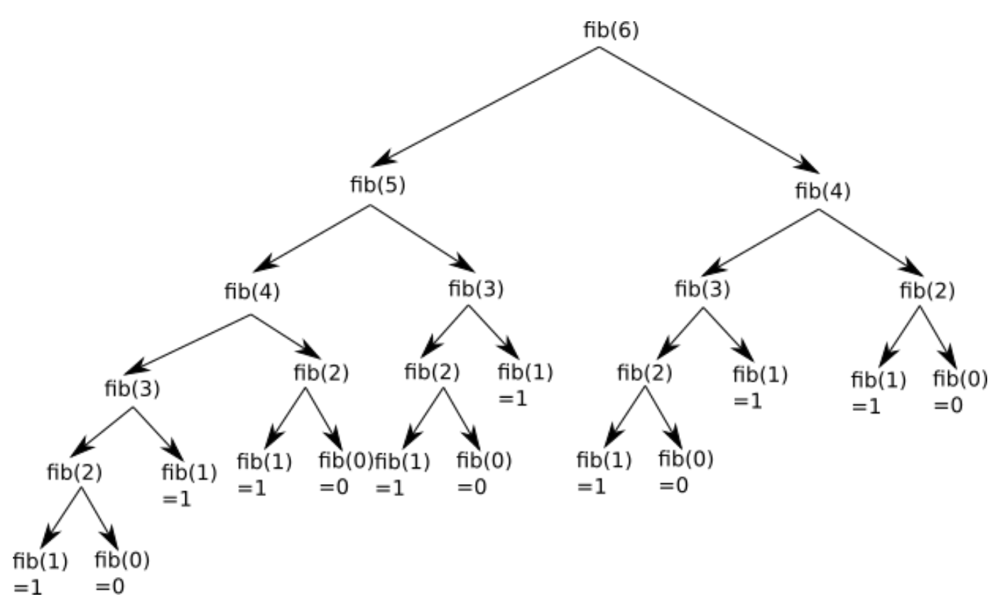
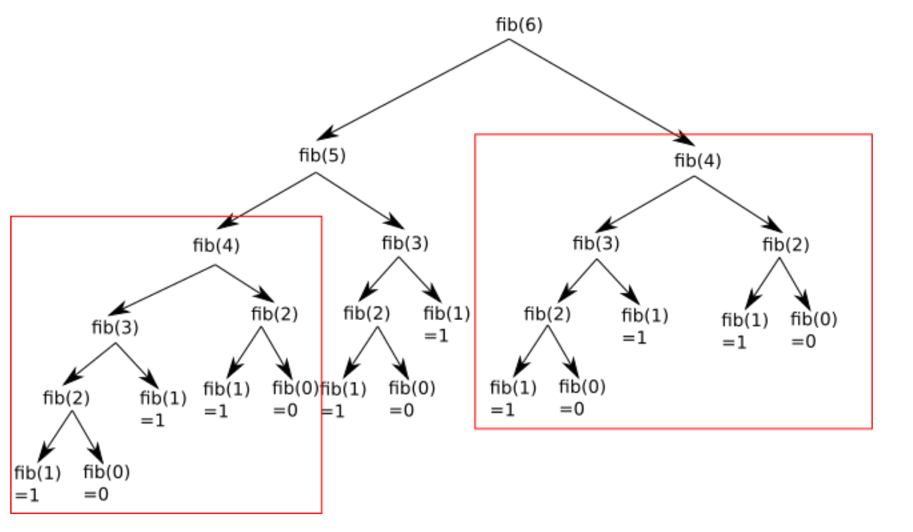

Programmation dynamique#
Contexte#
Exercice 1
- Écrire une fonction récursive qui calcule la factorielle \(n\). Rappel : \(n! = 1 \times 2 \times 3 \times ... \times n\)
- Écrire une fonction récursive qui permet de calculer le nième terme de la suite de Fibonacci.
Donc pour \(n=6\), cette deuxième fonction peut se représenter par le schéma ci-dessous :

Vous pouvez constater que l’on a une structure arborescente (typique dans les algorithmes récursifs), si on additionne
toutes les feuilles de cette structure arborescente (fib(1)=1 et fib(0)=0), on retrouve bien 8.
En observant attentivement le schéma ci-dessus, vous avez remarqué que de nombreux calculs sont inutiles, car effectué
2 fois : par exemple on retrouve le calcul de fib(4) à 2 endroits (en haut à droite et un peu plus bas à gauche) :

Exercice 2
Calculer le temps mis pour calculer le 30 ème terme de la suite de fibonacci.
Programmation Dynamique#
Premiers exemples sur la suite de Fibonacci#
En considérant l’algorithme précédant, on comprend bien qu’il est particulièrement inefficace de calculer plusieurs fois le même sous-calcul. Afin d’améliorer le temps de calcul de l’algorithme, nous décidons donc de mémoriser les calculs déjà effectués dans un tableau. Il existe deux méthodes différentes :
On va calculer les nombres de la suite de Fibonacci jusqu’à en partant de F(n) et F(0) et F(1). On appelle ce type de méthode une méthode Bottom-Up. Ce n’est pas une méthode récursive.
On va calculer les nombres de Fibonacci récursivement, mais en sauvegardant les calculs déjà effectués dans un dictionnaire Python. On appelle ce type de méthode une approche Top-Down :
Exercice 3
Calculer à nouveau le temps mis pour calculer le 30 ème terme de la suite de fibonacci avec les nouveaux algorithmes.
Programmation dynamique#
-
Lors d'un calcul effectué de manière récursive, il peut arriver que de multiples appels récursifs soient identiques. Pour éviter de recalculer plusieurs fois la même chose, on peut stocker les résultats intermédiaires. On appelle cette technique la mémoïsation. Cette technique minimise le nombre d'opérations et accélère grandement l'exécution du programme. Le prix à payer est l'utilisation d'une structure de stockage des valeurs intermédiaires, et donc une augmentation de la mémoire utilisée par le programme.
-
Lors d'un calcul effectué de manière itérative, il est parfois plus simple de commencer par une «petite» version du problème pour progressivement remonter vers la solution du problème global.
Application au rendu de monnaie#
Introduction#
Nous allons nous intéresser au problème suivant :
Étant donnés une liste de pièces pieces et une somme à rendre somme, peut-on calculer le nombre minimal de pièces pour réaliser cette somme ?
Remarques importantes :
Dans toute la suite, on considérera que la somme à rendre est un nombre entier positif, et que dans la liste de pièces se trouve la pièce de valeur 1. Ainsi, il est toujours possible de rendre la monnaie.
Notez bien que tous nos futurs algorithmes vont chercher à donner le nombre de pièces rendues et pas la composition de celles-ci.
Algorithme glouton itératif#
on cherche à rendre à chaque fois la plus grosse pièce possible.
Exercice 4
Compléter la fonction rendu_glouton qui prend en paramètres une liste de pièces pieces (classées dans l'ordre croissant) et la somme à rendre somme et qui renvoie le nombre minimal de pièces qu'il faut rendre.
Exemple d'utilisation :
Nous savons que cet algorithme est optimal sous certaines conditions sur la composition des pièces. Par exemple le système des euros (1, 2, 5, 10, 20, 50, 100, 200) rend l'algorithme glouton optimal (on dit que le système est canonique).
Mais si le système n'est pas canonique, l'algorithme glouton peut ne pas donner la meilleure solution :
Notre algorithme va trouver que 12 = 10 + 1 + 1 et donc rendre 3 pièces, alors qu'il est possible de faire et ne rendre que 2 pièces.
Algorithme récursif memoïsé#
Exercice 5
Compléter la fonction rendu_recursif_memoise qui prend en paramètres une liste de pièces pieces et la somme à rendre somme et qui renvoie le nombre minimal de pièces qu'il faut rendre.
On utilisera le dictionnaire memo_rendu dans lequel on associera à chaque somme somme son nombre de pièces minimal.
On procèdera de manière classique :
Soit la somme est disponible dans le dictionnaire, et on se contente de renvoyer la valeur associée. Soit on la calcule (comme dans l'algorithme classique), puis on stocke le résultat dans le dictionnaire avant de le renvoyer.
Exemple d'utilisation#
pieces_disponibles = [1, 2, 5] montant_a_rendre = 11 resultat = rendu_monnaie_top_down(montant_a_rendre, pieces_disponibles) print(resultat) # Résultat attendu : 3 (5 + 5 + 1)
```
Notre algorithme est maintenant beaucoup (beaucoup) plus efficace :
``` py linenums="1"
>>> rendu_recursif_memoise([1, 6, 10], 107)
12
```
Algorithme bottom-up#
En utilisant la version (bottom-up) nous allons ici calculer successivement tous les rendus minimaux jusqu'à somme avant de calculer le rendu minimal de somme.
exercice 6
Compléter la fonction rendu_bottom_up qui prend en paramètres une liste de pièces pieces et la somme à rendre somme et qui renvoie le nombre minimal de pièces qu'il faut rendre.
Nous stockerons chaque rendu dans un dictionnaire rendu, initialisé à la valeur 0 pour la clé 0.
Notre algorithme itératif est de complexité linéaire (par rapport à la variable somme).